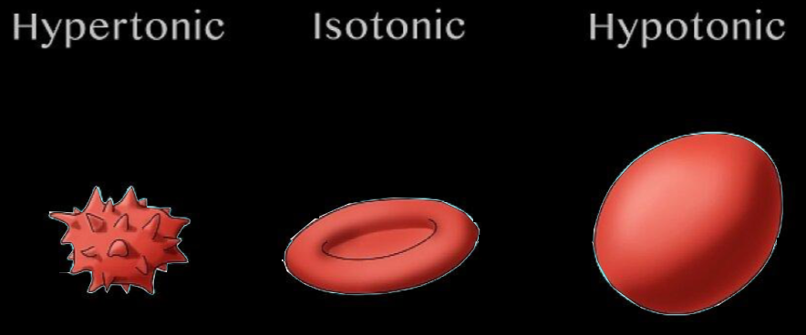
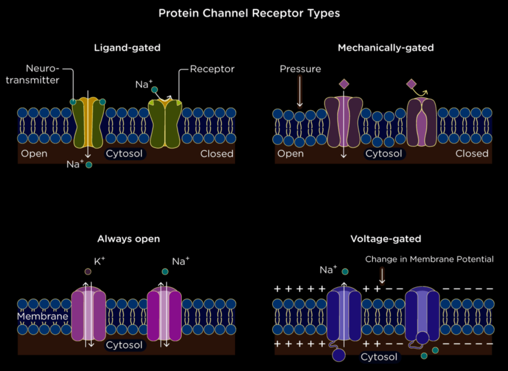
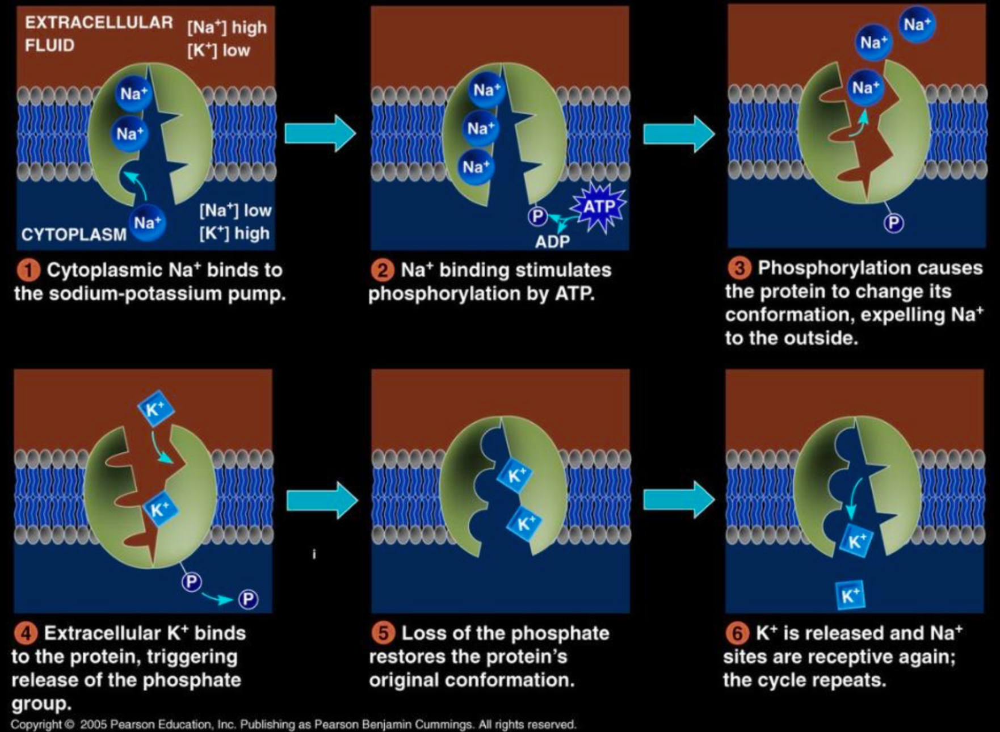

Structure and Physical Properties of the Membrane
- The main components of cell membranes are lipids (especially phospholipids) and proteins, although carbohydrates also possess an important role.
- A phospholipid is an amphipatic molecule meaning it has both a hydrophilic region (meaning 'water-loving') and a hydrophobic region (meaning 'water-fearing'). Most membrane proteins are also amphipatic molecules.
- The arrangement of molecules in the membrane is called fluid mosaic model and it takes its name from the bilateral quick movements of the phospholipids and slow movements of the proteins.
- The phospholipids are held together by hydrophobic interactions, while the proteins are also held by electrostatic interactions.
- Inbetween the phospholipids in the membranes of animal cells, we cand find cholesterol, which makes the membrane less fluid but also lowers the temperature required for the membrane to solidify, process in which unsaturated hydrocarbon tails also take part as their double bonds form kinks, distancing the phospholipids from each other. In extreme environments, the membrane's composition presents evolutionary adaptations.
- Referring to the synthesis of the membrane, carbohydrates are synthesised inside the endoplasmic reticulum, which are then transported through a vesicle to the Golgi apparatus and are then modified there to glycolipds, which are taken to the cell membrane by a vesicle which fuses with the cell membrane.

Types of Proteins in the Cell Membrane
- Integral proteins are the ones that go through the hydrophobic layer of the membrane, and most of them are transmembrane, meaning that they poke out on both sides of the membrane. Peripheral proteins are bound to the surface of the membrane by electrostatic interactions.
- Transport - integral proteins that present a channel for a particular solute or that change shape so as to allow the passage of bigger molecules.
- Enzymatic activity - integral proteins with an active site to which substances from the extracellular/intracellular can bind to.
- Signal transduction - integral proteins that have a binding site for a chemical messenger. When receiving a message, the cell responds through physical and/or chemical changes. It also binds to a cytoplasmatic protein.
- Cell-cell recognition - integral proteins that act as a way for cells to recognise each other and it causes cell-cell bindings for short periods of time. In this process, carbohydrates also have an important role, functioning as markers.
- Intercellular joining - proteins that form cell-cell bindings for longer periods of time through various kinds of junctions.
- Attachment to the cytoskeleton or extracellular matrix - elements of the cytoskeleton are noncovalently bound to membrane proteins and these bindings have an important role in maintaining cell shape and stabilizing different proteins, which coordinate cellular exchanges.

Selective Permeability
- This is the most important role of the membrane: it controls which molecules can pass it easily and which can't.
- Nonpolar molecules (e.g. \(\ce{CO2}\), \(\ce{O2}\), hydrocarbons) are hydrophobic as lipids and so they dissolve in the lipid bilayer so they can cross the barrier easy and quickly.
- Polar molecules (e.g. glucose and other sugars) require transport proteins to go cross the membrane. Transport proteins are specific for one substance/one group of substances and they change shape to allow the passage of the molecules. Water, a polar molecule of small dimensions, crosses the membrane through protein channels called aquaporins.
- A transport protein allows only a certain substance or a group of substances to cross the membrane.

Passive Transport
- It is called so because it is a type of transport that requires no input of energy.
- Diffusion is the movement of particles of the substance filing all the available space in a homogenous way, as a consequence of their constant thermal motion due to the possessed thermal energy.
- The role of diffusion between the intracellular and extracellular solutions is to bring the two at a dynamic equilibrium, in which the concentrations of the considered substance is equal on both sides of the membrane. Therefore, a substance will diffuse from where it is more concentrated to where it is less concentrated, down its concentration gradient.
- Osmosis is the diffusion of free water across the membrane. When the substance molecules are too large to pass through the cell, the dynamic equilibrium will be reached by the movement of water molecules. The more concentrated solution (referring to the substance we are considering for the equilibrium) has a lower free water concentration, while the less concentrated solution has a higher free water concentration. Therefore, the molecules will move from the solution with a higher free water concentration (lower solute concentration) to the one with the lower free water concentration (higher solute concentration).
- Tonicity is the ability of a surrounding solution to cause a cell to lose or gain water.
- If an animal cell (which you have learned previously that it does not have a cell wall) is immersed in an isotonic solution (meaning of the same concentration as inside the cell) there will be no net movement of water between the solution and the cell.
- If an animal cell is immersed in a hypertonic solution (meaning higher solute concentrations than inside the cell), the cell will lose water, get smaller in dimensions and eventually die.
- If an animal cell is immersed in a hypotonic solution (meaning lower solute concentration than inside the cell), water will enter the cell which will swell and lyse, a process called cytolyse (explode or burst). 
- If a cell that presents a cell wall (such as from plants, prokaryotes, fungi and some protists) is added to a hypotonic solution, it will take in water and swell only as much as the inflexible cell wall allows, point after which it exerts a turgor pressure on the cell, causing the cell to become turgid (rigid), which is the health state for most plant cells as it also poses an important role in the plant's mechanical support.
- Placed in an isotonic solution, the plant cell becomes flaccid (limp) and the plant wilts.
- However, when we place a cell wall in a hypertonic environment the cell wall won't be of much help. The water will leave the cell, and the plasma membrane will pull away from the cell wall, a phenomenon called plasmolysis, which causes the plant to wilt and can lead to plant death.
- Facilitated diffusion is the process through which ions and many polar molecules pass through the membrane with the help of transport proteins (there are two types of transport proteins - channel proteins and carrier proteins).
- Channel proteins provide corridors that allow specific molecules or ions to cross the membrane. Ion channels function as gated channels, meaning that they open or close in response to a stimulus. For example, the potassium ion channel of the nerve cell opens in response to an electrical stimulus. Other gated channels have a chemical stimulus , meaning that they open or close when a specific substance (other than the substance that they transport) binds to the channel.
- Carrier proteins undergo a change in shape that translocated the solute-binding site across the membrane and this change may be triggered by the binding and release of the transported molecule. Therefore, like ion channels, carrier proteins involved in facilitated diffusion result in the net movement of a substance down its concentration gradient, without any energy input. An example of a carrier protein is the glucose transporter in red blood cells that are so selective they even reject fructose (a structural isomer of glucose). 

Active Transport
- The reason facilitated diffusion is considered passive transport is because the solute is moving down its concentration gradient. Any transport that goes against the concentration gradient (from lower concentration to higher concentration of solute) is considered active transport, meaning that it requires energy.
- In this case, the transport proteins are all carrier proteins. ATP is the one that powers this transport, for example, by directly transferring its terminal phosphate group to the transport protein.
- One transport system that works this way is the sodium-potassium pump, in which for each 3 \(\text{Na}^+\) that are taken out of the cell, 2 \(\text{K}^+\) are brought inside the cell. 
- All cells have voltages (electrical potential energy) across their plasma membranes. The cytoplasmic side of the membrane is negative in charge relative to the extracellular side due to an unequal distribution of cations and anions on the two sides. The voltage across a membrane is called membrane potential (ranges from -50 to -200 mV). Therefore, the passive transport of anions to the outside of the cell and of cations to the inside of the cell is favoured. As so, the diffusion of ions is driven both by a chemical force (the concentration gradient) and by an electrical force (effect of the membrane potential) and this combination of forces is called the electrochemical gradient. For that reason, ions don't just go down the concentration gradient, but a more correct way of describing it is down the electrochemical gradient, this being the case in which both chemical and electrical forces act in the same direction, but this is not always the case (again, this is explaining the phenomenon for the passive transport! It is information necessary for the next part of the chapter, that is why it has been included here).
- When the electrical force opposes the chemical one, active transport is necessary. Some membrane proteins that actively transport ions contribute to the membrane potential by generating voltage across a membrane and these are called electrogenic pumps. The most important electrogenic pump in animal cells is the sodium-potassium pump, while in plant, fungi and bacteria cells it is a proton pump (which actively transports hydrogen ions \(\text{H}^+\)), which are important in the ATP synthesis during cellular respiration.
- In a mechanism called cotransport, a transport protein can couple the diffusion of a solute to the transport of a second substance against its own concentration gradient. For example, a plant cell uses the gradient of \(\text{H}^+\) generated by ATP powered proton pumps to drive the active transport of amino acids, sugars and other nutrients into the cell. Therefore, this protein can translocate the substance into the cell against its concentration gradient only if it is accompanied by \(\text{H}^+\) ions, moving in the same direction.
- Plants use \(\text{H}^+\)/sucrose cotransport to load sucrose produced by photosynthesis in the veins of leaves, which bring it to non-photosynthetic parts of the plant, which are low on sugars.
- In animals, a \(\text{Na}^+\)/glucose cotransport in intestinal cells poses a very important role in the regulation of Na+ concentration. Normally, \(\text{Na}^+\) is reabsorbed from waste in the colon but in cases of diarrhea the waste moves too quickly and therefore a life-threatening amount of \(\text{Na}^+\) is eliminated from the body. To minimize the effect of this, a high intake of \(\text{NaCl}\) and glucose is necessary for the cotransport in the intestines.

Exocytosis
- The process through which the cell secretes certain molecules by the fusion of vesicles through the plasma membrane is called exocytosis.
- A transport vesicle that comes from the Golgi apparatus travels along a microtubule from the cytoskeleton to the plasma membrane, which when getting in contact with the membrane of the vesicle, the two have proteins that rearrange the lipids in the membrane so that the two can fuse, and therefore the vesicle membrane becomes part of the cell membrane, while its contents spill to the outside of the cell.
- This type of transport is used by secretory cells to export products. For example, pancreas cells eliminate insulin (a hormone that is formed inside the pancreas) through exocytosis. Nerve cells use it to eliminate neurotransmitters, while plant cells use it to transport proteins and carbohydrates which are necessary for building cell walls.
Endocytosis
- The process through which the cell takes in molecules by forming new vesicles from the plasma membrane is called endocytosis. Although the proteins involved are different from the ones in exocytosis, the endocytosis looks reversed to the exocytosis.
- Phagocytosis is the intake of solid particles. By extending pseudopodia from the cell around the particle, it packages it in a membranous sac called a food vacuole, which will the be digested after fusing with a lysosome containing hydrolytic enzymes.
- Pinocytosis is the intake of fluid into the cell. Droplets of extracellular fluid are taken in vesicles formed from the membrane. This type of transport is nonspecific as the droplets contain dissolved molecules which cannot be selected before being taken in. The parts of the membrane that form vesicles are coated on the inside with coat proteins and these resulting vesicles are called coated pits.
- Receptor-mediated endocytosis is a specialized type of pinocytosis. Its goal is to acquire a certain substance in a big quantity. The parts of the plasma membrane that have coat proteins also have a receptor site, to which the necessary substance binds, causing the vesicle (that contain those receptors) to form and to bring in the fluid that contains the desired molecules. After the ingested material is let out from the vesicle to the cytoplasm, that same vesicle brings the receptors back to the membrane.

Written by Bianca Buzas